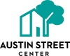
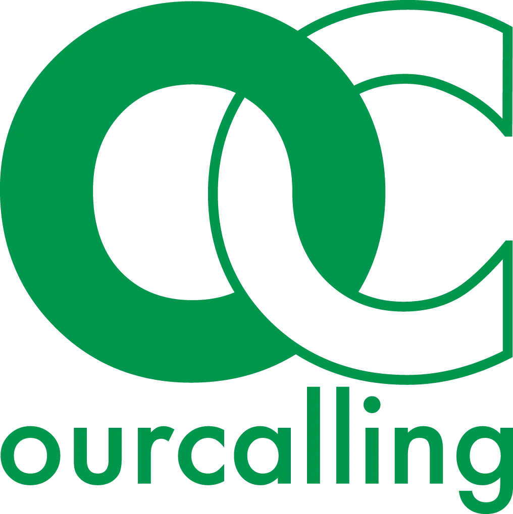
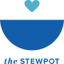

Community Resource Links
Why We Share These Resources
At Tonight We Ride, outreach begins with relationship. We meet people where they are — on the street, in crisis, or in transition — and walk alongside them with compassion, consistency, and faith. While we provide direct support whenever possible, lasting change happens through connection to trusted partners who offer shelter, recovery programs, healthcare, and pathways to stability.
These organizations represent some of the strongest, most respected service providers in Dallas. By working together, we help ensure that every person we encounter has access to not just immediate care, but real opportunities for restoration, dignity, and hope.
Major Emergency & Transitional Shelters (Downtown Core)

Dallas Life
Address: 1100 Cadiz St, Dallas, TX 75215
Faith-based shelter serving Dallas since 1954, providing lodging, meals, counseling, and structured recovery programs. Known for longer-term stabilization alongside emergency shelter services.
https://dallaslife.org

The Bridge Homeless Recovery Center
Address: 1818 Corsicana St, Dallas, TX 75201
Large, low-barrier day and night shelter offering meals, case management, and recovery-focused support. Serves as a central intake point for individuals experiencing homelessness downtown.
https://www.bridgehrc.org

Austin Street Center
Address: 1717 Jeffries St, Dallas, TX 75226
One of the city’s largest shelters, focused on long-term solutions and case management, particularly for older adults and individuals with medical or mental health needs.
https://austinstreet.org
Shelter Ministries
Address: 2929 Hickory St, Dallas, TX 75226
Smaller, community-centered shelter emphasizing individualized recovery, employment readiness, and faith-based support.
https://www.shelterministries.org
Outreach-Driven Organizations (Serving the Unsheltered Daily)

OurCalling
Address: 1702 S Cesar Chavez Blvd, Dallas, TX 75215
Street-level engagement model focused on building relationships, mentoring, and connecting individuals to services — not just providing beds.
https://www.ourcalling.org

The Stewpot
Address: 1610 S Malcolm X Blvd, Dallas, TX 75226
Provides meals, counseling, medical resources, and assistance with obtaining identification; often acts as a front-door service provider for unsheltered neighbors.
https://thestewpot.org
Home Point
Address: 2800 Live Oak St, Dallas, TX 75204
Coordinated-access organization helping individuals navigate housing placement and support systems across Dallas County.
https://homepoint.org/